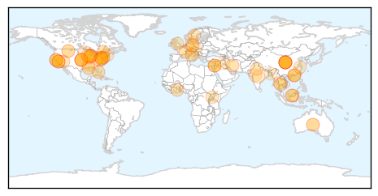

Unknown
30-Day Web Trend
1 alerts, 0 warnings

30-Day Twitter Trend
0 alerts, 0 warnings

Article Locations
Article Confidences

Top Articles:
- 0.969
- Mutating H7N9 bird flu may pose pandemic threat, scientists warn
- 0.967
- Mutating H7N9 bird flu may pose pandemic threat, scientists warn
- 0.962
- Mutating H7N9 bird flu may pose pandemic threat, scientists warn
- 0.958
- Mutating H7N9 bird flu may pose pandemic threat
- 0.926
- Bird flu hits U.S. turkeys, H7N9 spreads in China
- 0.917
- Chicago Tribune
- 0.917
- Chicago Tribune
- 0.917
- Chicago Tribune
- 0.917
- Chicago Tribune
- 0.917
- Chicago Tribune
- 0.917
- Chicago Tribune
- 0.917
- Chicago Tribune
- 0.917
- Chicago Tribune
- 0.917
- Chicago Tribune
- 0.917
- Chicago Tribune
- 0.917
- Chicago Tribune
- 0.917
- Chicago Tribune
- 0.917
- Chicago Tribune
- 0.917
- Chicago Tribune
- 0.917
- Chicago Tribune
- 0.917
- Chicago Tribune
- 0.917
- Chicago Tribune
- 0.917
- Chicago Tribune
- 0.917
- Chicago Tribune
- 0.917
- Chicago Tribune
- 0.917
- Chicago Tribune
- 0.910
- The world windows to Thailand
- 0.875
- Ross River outbreak fears become reality
- 0.867
- Young VA ice machine had low level of Legionnaires' bacteria, VA says
- 0.855
- Director: HFMD outbreak declared in Sarawak – BorneoPost Online
- 0.823
- Chicken pox reported at Shippensburg school
- 0.817
- Killer virus ravages kids in Muzaffarpur
- 0.812
- Toronto at centre of dramatic rise of gonorrhea in Ontario
- 0.811
- Worker at New Orleans monkey lab exposed to dangerous bacteria
- 0.778
- Bacterial Enteric Infections Detected by Culture-Independent Diagnostic Tests — FoodNet, United States, 2012–2014
- 0.761
- Why is drinking water important? How much water should you drink?
- 0.744
- Military joins fight to contain typhoid
- 0.741
- Botched up sterilisations claim 14 lives in Bihar
- 0.735
- Five Queenslanders a week tested for exotic diseases after receiving bites from animals while overseas
- 0.726
- Daily Express Newspaper Online, Sabah, Malaysia.
- 0.705
- Chinese medicine gets WHO recognition
- 0.704
- FBC News
- 0.693
- Kalispell hospital investigates confirmed case of tuberculosis
- 0.693
- State Records Sharp Increase In HFMD Cases
- 0.672
- if you don’t stop it, you can go blind
- 0.648
- Doctors encourage more children to get HPV vaccine
- 0.644
- Worker at Tulane primate center exposed to bioterror bacteria
- 0.619
- Change of season sees rise in viral fever cases in Indore
- 0.610
- Boil-Water Alert Issued For Quitman County
- 0.606
- Lab employee tests positive for deadly bacteria that escaped primate research facility
Showing top 50 articles...
Top Tweets:
- 0.707
- This flu season severe for ppl 65+ yrs. Older adults should seek treatment for flu symptoms quickly. http://t.co/zR8sYXEWCr
- 0.569
- H7N9 bird flu has the makings of a pandemic virus, scientists warn http://t.co/TDizD0amCP
- 0.528
- Flu season isn’t over just yet. Take everyday actions to help fight flu and other viruses: http://t.co/cWROoWJLf5
Swine Flu
30-Day Web Trend
12 alerts, 13 warnings

30-Day Twitter Trend
6 alerts, 0 warnings

Article Locations

Article Confidences

Top Articles:
- 1.000
- Dispur draws flak over apathy
- 0.999
- Study: India’s swine flu virus may have mutated into more dangerous strain
- 0.999
- Unanswered questions about Swine Flu in State Grey areas multiply anxiety, RIMS not officially informed
- 0.999
- It’s official: H1N1 toll 12 in State
- 0.998
- Weather hope in flu fight
- 0.998
- Youngster dies of swine flu, three deaths in Jan
- 0.998
- Manipur witnesses 1st swine flu casualty
- 0.997
- Swine flu claims 4 more lives in Rajasthan, toll reaches 358
- 0.997
- Swine flu-hit doctors back on job
- 0.996
- newkerala.com, India Regional News 24652
- 0.996
- Why Swine Flu Virus is Deadlier This Year
- 0.996
- Swine flu toll reaches 1,587, but sharp fall recorded in deaths from disease in March
- 0.995
- Swine flu deaths raise alarm
- 0.994
- India rejects US study, says no mutation in swine flu strain
- 0.994
- Telangana Registers 37 Fresh Swine Flu Cases
- 0.994
- District magistrate among 126 swine flu patients in Bihar
- 0.991
- Swine flu toll reaches 1587 but sharp fall recorded in deaths from disease in March
- 0.990
- Two Fatehgarh Sahib residents succumb to swine flu
- 0.990
- ASHA workers roped in to check swine flu cases in pregnant women
- 0.985
- Indian swine-flu virus reveals dangerous new mutation
- 0.985
- India is highly vulnerable to a range of animal-to-human infections
- 0.981
- Private hospital in East Delhi cheats H1N1 patient : India, News
- 0.978
- Mumbai: BMC hospitals aren't giving patients swine flu masks
- 0.975
- Health ministry, MIT duo at odds over swine flu
- 0.975
- Swine flu virus in India turns even more dangerous, MIT study warns
- 0.969
- Swine flu virus in India turns more dangerous: Study
- 0.967
- MP: Late referrals cause of high H1N1 deaths at MY Hospital
- 0.966
- Woman dies of swine flu infection, death toll in Mumbai touches 23
- 0.966
- NIV claims swine flu virus has not mutated, to submit report to Centre
- 0.966
- Another pregnant woman dies of H1N1
- 0.964
- Delhi nursing home cheats swine flu patient out of life-saving medicine
- 0.962
- Taiwan to donate 10,000 masks to Gujarat and Delhi
- 0.960
- Ruckus in House over swine flu deaths in Jharkhand
- 0.956
- No evidence to suggest swine flu virus has mutated: NIV
- 0.949
- Ruckus in House over swine flu deaths in Jharkhand
- 0.949
- MIT swine flu report to be studied: Indian experts
- 0.944
- Taiwan to donate 10,000 masks to Gujarat and Delhi
- 0.944
- Taiwan to donate 10,000 masks to Gujarat and Delhi
- 0.936
- MIT swine flu report to be studied: Indian experts
- 0.936
- ‘H1N1, KFD under control’
- 0.935
- Nepal Human Rights Four new swine flu cases detected in Chitwan
- 0.921
- India's killer swine flu turns more dangerous
- 0.920
- Mask price soars, govt steps in
- 0.911
- H7N9 Bird Flu Is Mutating, Sparks Pandemic Concerns
- 0.901
- Taiwan to donate 10,000 masks to Gujarat and Delhi
- 0.894
- Intra-nasal vaccines now available in Pune
- 0.880
- Swine Flu claims 3 lives in JKD
- 0.869
- Five treated for H1N1 discharged from hospital
- 0.868
- Suspected swine flu patient dies in IDH
- 0.864
- India H1N1 MIT study: Health ministry refutes mutation findings
Showing top 50 articles...
Top Tweets:
- 0.757
- Swine Flu Virus in India Deadlier Than Ever http://t.co/vMswuQSRH8